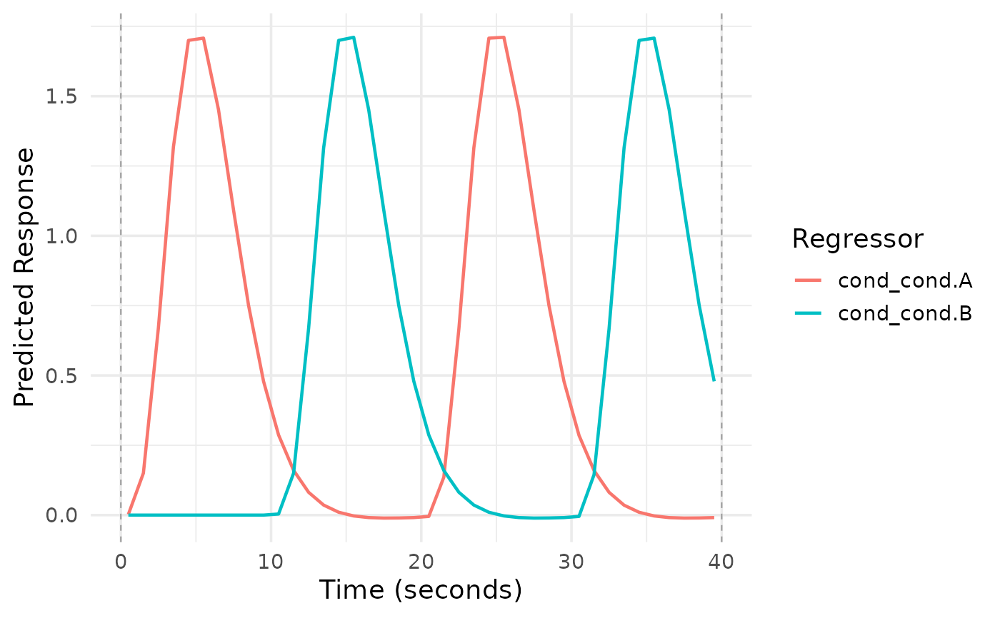
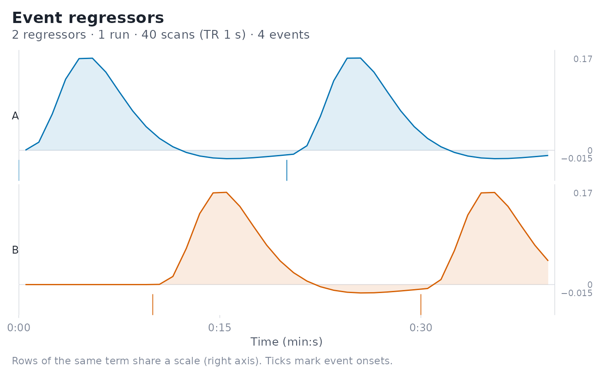

Draws the convolved regressors of an event_model against time, with the
events that generate them marked underneath.
Usage
# S3 method for class 'event_model'
plot(
x,
term_name = NULL,
style = c("auto", "stacked", "overlay", "heatmap"),
show_events = TRUE,
facet_threshold = Inf,
label_mode = c("auto", "compact", "none"),
max_labels = 30,
abbrev_min = 10,
strip_text_size = 8.5,
block_x = c("global", "run"),
facet_by_block = FALSE,
show_block_bounds = TRUE,
y_scale = c("term", "row", "shared"),
time_range = NULL,
title = NULL,
subtitle = NULL,
...
)Arguments
- x
An
event_modelobject.- term_name
Character. Name of a specific term to plot. If
NULL, plots all terms.- style
Layout; one of
"auto","stacked","overlay","heatmap".- show_events
Logical; draw event onset marks (rugs in stacked and overlay styles, ticks in heatmap style). Default
TRUE.- facet_threshold
Integer. In
"overlay"style, switch to one panel per regressor when the number of regressors exceeds this value.- label_mode
Character. One of
"auto","compact","none"."compact"abbreviates condition labels,"none"suppresses them, and"auto"suppresses them when there are more thanmax_labels.- max_labels
Integer. Label limit used by
label_mode = "auto".- abbrev_min
Integer. Minimum length used by
base::abbreviate()when compacting labels.- strip_text_size
Numeric. Size of row and panel labels.
- block_x
Time axis for multi-run designs.
"global"(default) uses concatenated time so each run occupies its own x-range;"run"uses run-relative time that restarts each run (combine withfacet_by_block = TRUEto avoid overlaying runs).- facet_by_block
Logical; if
TRUE, draw one column of panels per run.- show_block_bounds
Logical; draw rules at each run's start and end. Drawn only when a
sampling_frameis available.- y_scale
How stacked rows share their amplitude axis.
"term"(default) gives rows of the same term (and basis function) one common scale, so conditions can be compared directly while terms with different units (e.g. a parametric modulator) keep their own;"row"scales every row independently;"shared"uses one scale for all rows.- time_range
Optional numeric length-2 vector (seconds, in the units of the time axis) to zoom into, e.g.
c(0, 60)to inspect basis shapes.- title, subtitle
Optional plot title and subtitle.
NULLuses an informative default;NAremoves it.- ...
Unused; accepted for compatibility.
Details
The default style = "auto" picks the layout that stays readable for the
design at hand:
"stacked": one row per condition on a shared time axis. Each row is scaled on its own so response shapes stay visible, and a rug under each trace marks the onsets of that condition's events. Basis sets (e.g. SPMG3) are drawn in the same row, distinguished by line type."heatmap": one raster row per regressor, used automatically for large designs such as trialwise (beta-series) models, where overlapping traces are unreadable. Rows are ordered by first onset."overlay": all regressors on one shared amplitude axis, useful for comparing magnitudes directly.
Runs are shown as alternating light bands labelled along the top edge, with thin rules at each run's start and end so late starts and overruns are easy to spot. Lines never connect across a run boundary.
Examples
des <- data.frame(
onset = c(0, 10, 20, 30),
run = 1,
cond = factor(c("A", "B", "A", "B"))
)
sframe <- fmrihrf::sampling_frame(blocklens = 40, TR = 1)
emod <- event_model(onset ~ hrf(cond), data = des, block = ~run, sampling_frame = sframe)
plot(emod)
 plot(emod, style = "overlay")
plot(emod, style = "overlay")

plot(emod, term_name = "cond")
